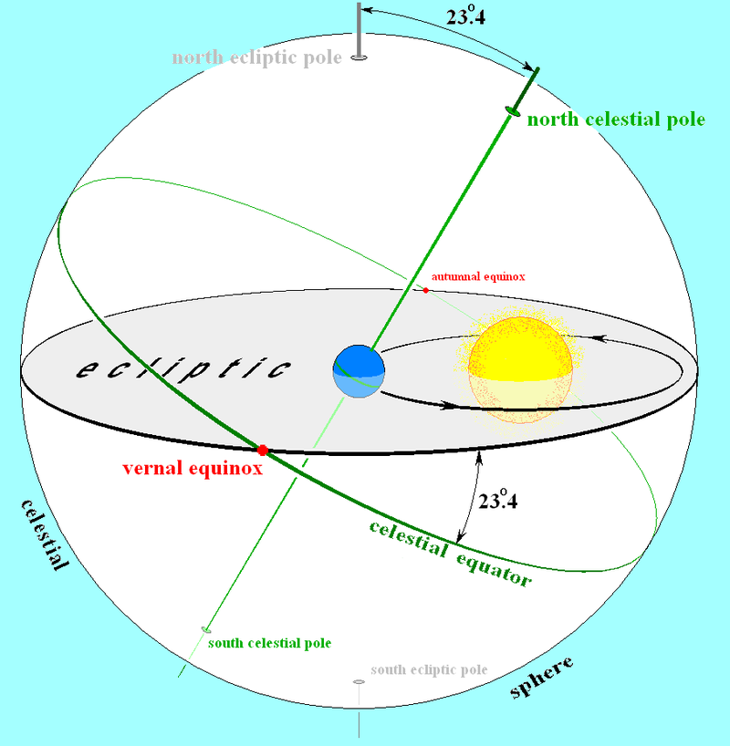
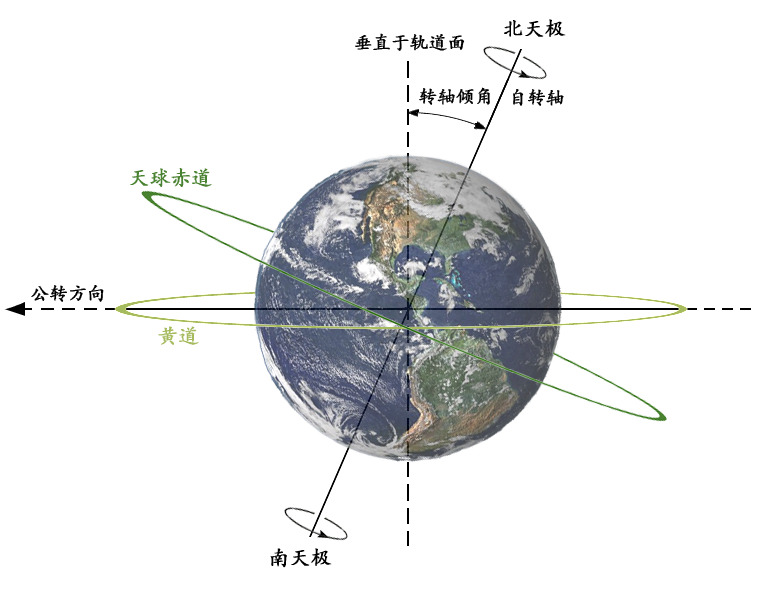
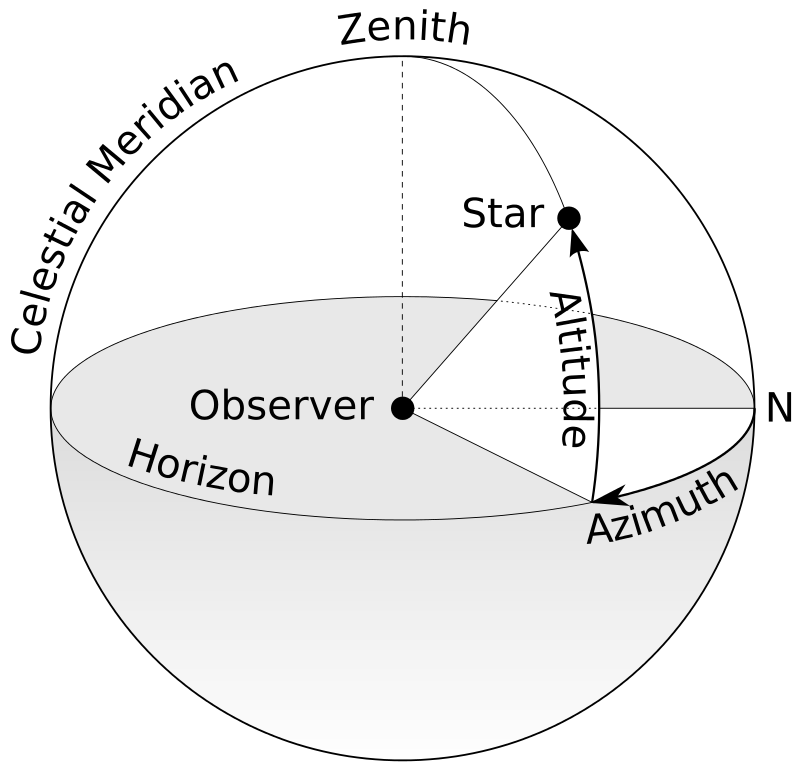
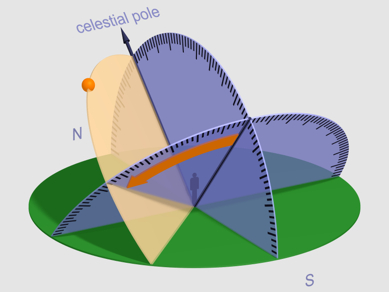

太阳位置是从地球表面观察时，太阳在天空中的位置，它是时间和地理位置两者的函数。计算给定地点和时间的太阳位置要经过下列三个步骤：
- 计算太阳在黄道坐标系的位置
- 转换到赤道坐标系统
- 依据观测者的位置和时间，转换到地平坐标系
计算太阳黄道坐标的方法
黄道坐标系是以黄道作基准平面的天球坐标系统，多用作研究太阳系天体运动情况之用。如图1所示。

黄道是由地球上观察太阳一年中在天球上的视运动所通过的路径，若以地球“不动”作参照的话就是太阳绕地球公转的轨道平面（黄道面）在天球上的投影。
黄道与天赤道相交于两点：春分点与秋分点（这两点称二分点）；而黄道对应的两个几何极是北黄极（在天龙座）、与南黄极 (在剑鱼座)。
在黄道上与黄道平行的小圆称黄纬，符号β，以由黄道面向北黄极方向为正值（0°至90°），向南黄极方向则为负值。垂直黄道的经度称黄经，符号为λ，由春分点起由西向东量度（0°至360°）。像赤道坐标系中的赤经一样，以春分点做为黄经的起点。
此坐标系特别适合标示太阳系内天体的位置，大多数行星（水星和冥王星除外）与许多小行星轨道平面与黄道的倾角都很小，故其黄纬值（β）都不大。
太阳黄道坐标的近似计算方法如下：
先计算与格林尼治 2000.0年1月1日中午12:00（历元）相距的日数。如果你知道儒略日，则你的叙述会如下：
$$ n = \mathrm{JD} - 2451545.0 $$
以光行差修正太阳的平黄经，如下：
$$ L = 280.460^\circ + 0.9856474^\circ n $$
太阳的平近点角（实际上，是地球在轨道上绕着太阳，但是假设太阳绕着地球比较方便）如下：
$$ g = 357.528^\circ + 0.9856003^\circ n $$
根据需要将L和g多次加或减360°，让数值的范围调整到0°至 360°之间。
最后，太阳的黄经是：
$$ \lambda = L + 1.915^\circ \sin g + 0.020^\circ \sin 2g$$
太阳的黄纬是:
$$ \beta = 0 $$
太阳的黄纬不超过0.00033，
并且从太阳到地球的距离，以天文单位度量是：
$$ R = 1.00014 - 0.01671 \cos g - 0.00014 \cos 2g $$
计算太阳赤道坐标的方法
赤道坐标系统是使用得最广泛的天球坐标系统，他的元素是:
- 赤纬（$\delta$）
- 赤经（$\alpha$ ）－也记为RA
他与地理坐标系统非常相似，因为两者使用相同的基准平面和相同的极点。地球的赤道在天球上的投影就称为天球赤道，相同的，地理极点在天球上的投影就是天极，如图2所示。

在经过一夜或数个夜晚，就能看出来星星在天空中的位置移动了，当然，这并非恒星在天球上的运动，只是地球运动造成的。因为岁差和章动的影响，在相当长的时间间隔下所做的观测，就必须注明所使用的特殊历元，为行星、恒星、星系等等的位置做记录。现在使用的历元是J2000.0分点，稍早期使用的是B1950.0分点。
赤道坐标系统中与纬度相似的值是赤纬(缩写为Dec.)，是天体在天球赤道上方或下方的角度。与经度对应的是赤经(缩写为RA)，是与春分点的角度距离，不同于经度的是赤经以时、分、秒为单位，而非度、分、秒。
$\lambda$、$\beta$ 和 $R$ 构成太阳在黄道座标完整的位置。通过黄赤交角 $ε$ 的计算可以转换成赤道座标，计算方法如下：
赤经：
$$ \alpha = \arctan(\cos \epsilon \tan \lambda)$$
赤纬：
$$ \delta = \arcsin(\sin \epsilon \sin \lambda)$$
其中，黄赤交角不是固定不变的，它目前的值接近：
$$ \epsilon = 23.439^\circ - 0.0000004^\circ n $$
计算太阳地平坐标的方法
地平坐标系，又作地平座标系，是天球坐标系统中的一种，以观测者所在地为中心点，所在地的地平线作为基础平面，将天球适当的分成能看见的上半球和看不见（被地球本身遮蔽）的下半球。上半球的顶点（最高点）称为天顶，下半球的顶点（最低点）称为地底。如图3所示。

地平坐标系统是：
- 高度角（Altitude, Alt）或仰角又称地平纬度，是天体和观测者所在地的地平线的夹角，有时就称为高度或海拔标高（elevation, geometric height）。
- 方位角（Azimuth, Az）又称地平经度，是沿着地平线测量的角度（由正北方为起点向东方测量）。
因此地平坐标系有时也被称为高度/方位（Alt/Az）坐标系统。
只要知道观测者的地理坐标与时间，就可以将地平坐标转换成赤道坐标，或是反过来将赤道坐标转换成地平坐标。（纬度在北极点是+90°，在赤道是0°，南极点是-90°。）
在数学公式中，以$A$代表方位，$a$代表高度。
以$\delta$ 表示赤纬，$H$ 表示时角。 $φ$ 为观测者所在地的纬度。
赤道坐标转为地平坐标的计算方法如下：
$$\sin a=\sin \phi \cdot \sin \delta +\cos \phi \cdot \cos \delta \cdot \cos H$$
$${\displaystyle \cos A\cdot \cos a=-\cos \phi \cdot \sin \delta +\sin \phi \cdot \cos \delta \cdot \cos H}$$
$${\displaystyle \sin A\cdot \cos a=\cos \delta \cdot \sin H}$$
有些人或许会试图将最后两个公式相除来加以简化，以消除$\cos a$，而只剩下$\tan A$。但是正切函数不能清楚的区别出象限，例如45°和225°是完全不同的方位，分别指向相对的东北方和西南方。
时角（HA）是天文学的名词，一个天体的时角被定义为该天体的赤经与当地的恒星时的差值。 在天文学和天文航海中，时角是在赤道坐标系中用于给出天球上点的方向的坐标之一。 一个点的时角是两个平面之间的角度：一个平面包含地轴和天顶（子午面），另一个平面是穿过该点与极点（地轴）的球面大圆切圆所形成的平面（赤经圈）。如图4所示。

时角由天赤道平面上的橙色箭头指示。 箭头自天球天赤道的子午面至观测目标所在面的球面大圆处结束，该球面大圆也是赤经圈
时角由子午线确定，遵循的规则是在子午线的东边则为负时角，在子午线的西边则为正时角，或者向西为正的360度，时角与经度的换算方法为24h = 360°。
一个天体的时角表示该天体是否通过了当地的子午圈（中天）。其数值则表示了该天体与当地子午圈的角距离，并借用时间的单位，以小时来计量（1HA = 15度）。例如，一个天体的时角是2.5HA，就表示他已经在2.5个小时之前通过当地的子午圈，并且在当地子午圈的西方37.5度的距离上。负数则表示在多少小时之后将通过当地的子午圈。当然，当时角为0时的意思就是这个天体就在当地的子午圈上。